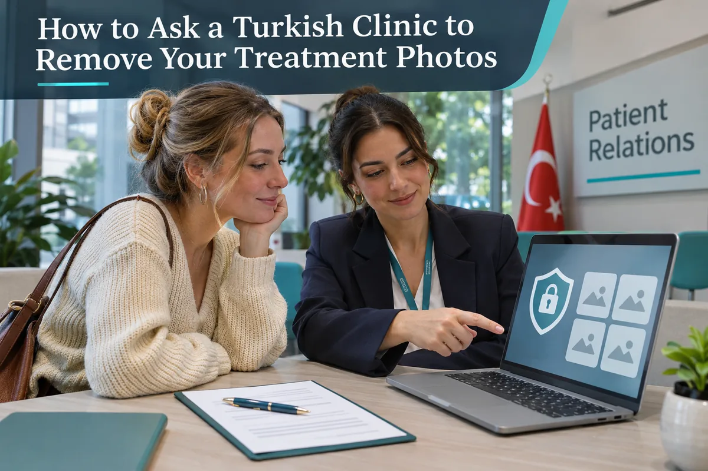

Start with a specific removal request
If a Turkish clinic has published your treatment photographs, identify the posts, save a private record and send a clear request to the organisation responsible for publishing them. State which permission you are withdrawing and which public uses should stop. Ask for confirmation covering its website, social accounts and advertising partners. A precise request is easier to follow than a general message saying that you are unhappy with the clinic.
Finding an image online can feel intrusive even when you once agreed to a photograph. You may recognise your face, a tattoo, jewellery, a distinctive scar or a combination of details. You do not need to solve every legal question before asking the publisher to stop using the material. Start with the locations you can identify and explain how you recognise yourself without circulating additional intimate photographs.
This guide addresses photographs, video clips and patient stories used for promotion. It provides a practical way to organise the request from abroad. The examples below are hypothetical. Your signed documents, the account involved and the purpose of each retained copy will affect an individual legal assessment. For the wider background, see our guide to patient rights and informed consent.
Check the permission and the purpose
The Ministry of Health's regulation published on 12 November 2025 addresses patient visuals in Article 7. It requires explicit consent, allows the patient to see proposed content beforehand and permits withdrawal of sharing permission at any time without procedural conditions. The facility or professional must deal with the withdrawal immediately. Article 8 contains specific rules for international health tourism; its privacy and documented-consent requirements remain relevant to overseas-facing promotion. This is an existing framework, rather than a new rule announced today. Official regulation, Articles 7 and 8
Retrieve the document that mentions image recording and processing. Look for the version you received, the date, the named provider, the intended channels and any ticked choices. Keep a photograph of the complete document, including the reverse side and attachments. A page authorising treatment may sit beside a separate publicity form in the same admission pack. Record where each document came from before treating a signature as an answer to every later use.
Make a short purpose list: clinical comparison, communication with your treating team, publication on a website, paid social promotion, or inclusion in an overseas sales presentation. Ask the clinic which permission or other legal basis it says covers each activity. This lets you focus on public distribution while obtaining a separate explanation about any clinical photographs that remain in your medical file.
Save a private evidence packet
Before contacting the account owner, capture the complete post with the account name, caption, publication date if displayed and direct address. Save a full-page screenshot where practical, together with the image as it appeared on screen. For a video, note the relevant moment and preserve a lawful copy if the platform permits it. Keep the original files in a private folder with a simple index.
Separate an observation date from an upload date. For example, your index might say that you saw an Instagram post on Tuesday evening, while the page displayed an earlier posting date. If the date is unclear, write that it is unknown. A file's download timestamp usually tells you when you obtained that copy; it does not establish when the clinic first published the photograph.
Include context that could explain identification: a visible clinic logo, a procedure description, a tagged profile or a quotation attributed to you. Do not crop away a relevant caption in your only saved copy. You can make a cropped working version for correspondence while retaining the complete original. Our guide to preserving clinic advertising explains how context can support a later review.
Avoid reposting the image to obtain attention. A public complaint can create more searchable copies and reveal treatment details to a wider audience. If you need a lawyer to review an intimate image, ask for a secure submission method first. Record the extent of the original publication without creating a second distribution problem through an unrestricted attachment or shared folder.
Identify everyone who controls a copy
The clinic's brand name, the hospital's company and a surgeon's personal account may represent different publishers. Start with the account actually displaying the photograph. Check the website's legal notice, privacy information and contact page against your invoice and admission documents. If an intermediary arranged the trip, establish whether it operates the promotional channel or simply links to another organisation's post.
Prepare a small channel register. Give each row a direct URL, the displayed owner, your observation date, the requested action and the current response. Separate the clinic website from a surgeon's profile, a booking agency's gallery, a story highlight and a paid advertisement. This prevents a reply about one removed post from being mistaken for completion across several independent destinations.
Ask the clinic to identify any agency or contractor to which it supplied the material for promotion and to explain what instructions it has sent. A photographer may hold a source file while a marketing company schedules the public campaign. You can request a coordinated response, but do not assume that one recipient has immediate technical control over every account bearing a similar trading name.
For example, suppose a hospital removes the photograph from its main gallery but the booking agency still displays it in a package advertisement. Mark the hospital row as removed after checking it, retain the agency row as outstanding and address that publisher separately. The useful next step is a specific follow-up naming the surviving URL, rather than repeating the entire original history to every employee.
Write a request that can be acted on
Use a subject that identifies the task, such as withdrawal of treatment-image sharing permission. Provide your name as recorded by the clinic, the treatment date or patient reference and a secure return address. Include only the identity details needed to locate your file. Ask how the clinic wants to verify identity before sending a passport image through an informal social-media conversation.
State that you withdraw any permission relied on for the public promotional uses listed in your attachment. Identify the photographs or clips by their addresses and a brief neutral description. Ask the recipient to stop publication, scheduled reposting and paid distribution through channels it controls. Request a written account of the action taken and identification of any listed channel it says belongs to another publisher.
A short example could read: I am the patient treated on the date below. I withdraw permission for promotional sharing of my treatment images. Please remove the material at the listed addresses and stop future promotional use through your controlled channels. Please confirm the action taken, notify relevant promotional recipients and explain any copies retained for another purpose. I can complete appropriate identity checks through your verified contact route.
Adapt the wording to the facts. If you never agreed to publication, say so accurately while requesting removal and a copy of the document the clinic relies on. If you agreed to one channel, describe that limitation. Avoid declaring that a particular signature is forged unless you have grounds for that allegation. Asking for the complete form and its context can resolve a misunderstanding without prejudging the evidence.
Keep public removal separate from clinical retention
A request to stop promotional display can specify that clinical evidence should be preserved securely where lawful. This is especially useful if a photograph may later help assess healing or treatment. Ask the provider to explain the purpose, legal basis, access controls and retention period for any copy it continues to hold. Request restriction of unnecessary publicity while the retention issue is assessed.
KVKK Article 11 provides rights to ask about processing, purposes and recipients, and to seek erasure or destruction under Article 7's conditions. Erasure therefore depends on the circumstances. A request to remove a public gallery does not automatically settle which healthcare records may lawfully remain in a protected archive. Law No. 6698, Articles 7 and 11, official consolidated text
Describe the result you want in ordinary terms. You may want a facial photograph removed from a sales page, future advertisements stopped and the original clinical series preserved for your doctor. Those instructions give the recipient a clearer task than demanding destruction of everything associated with your admission. If you are considering a treatment claim, obtain advice before requesting irreversible destruction of potentially relevant evidence.
The same distinction helps when the clinic offers only to obscure your face. Consider whether tattoos, captions, tags or other details still identify you and whether you actually asked for alteration or complete removal. Record the proposal and respond with your preferred scope. Keep both versions privately if the modified post remains relevant to a complaint, without implying that obscuring one feature necessarily resolves the legal issue.
Track replies and the applicable timetable
Send the request through the provider's verified application route and keep evidence of delivery. Save the exact message, attachments, receipt and any reference number. If a coordinator promises action on a call, follow up with a dated note describing what you understood and ask for written confirmation. Keep the practical removal request visible while any formal personal-data application is processed.
For a formal KVKK application, Article 13 generally requires resolution as soon as possible and within thirty days, with a written or electronic reply. Article 14 sets the complaint timetable: thirty days from learning the reply and, in every case, sixty days from the application. Its conditions and the date calculations deserve individual attention. The separate image-permission rule requires immediate handling; a thirty-day outer limit should not be presented as permission to continue promotional sharing. Law No. 6698, Articles 13 and 14
Maintain one chronology showing delivery, acknowledgement, telephone conversations, partial removals and the final reply. An informal chat and a formal application may have different evidential significance, so preserve both. If the clinic responds only by telephone, our guide to obtaining a written reply to a clinic data request explains what to clarify before relying on the conversation.
Avoid restarting the timeline by sending repeated versions of the same request without a reason. A focused supplement can identify a newly discovered post and refer back to the original application. If a deadline may be approaching, ask a Turkish lawyer to review the actual dates and documents. A platform report or a complaint to a different authority should not be assumed to preserve every other available time limit.
Check the result channel by channel
Revisit each saved address after the publisher confirms removal. Record what you can actually see: the post is unavailable, the image has changed, the page remains public or access now requires a login. A page hidden from your particular account may still be accessible elsewhere. Describe that limitation honestly instead of treating one browser observation as universal proof that all copies have disappeared.
Inspect thumbnails, story highlights, pinned posts and linked galleries where you already have a relevant address. Check whether a scheduled advertisement continues to use the material if it is visible to you. Keep the review proportionate; you do not need to search every possible platform indefinitely before acknowledging a verified removal. List the locations checked and the destinations for which you still need the publisher's confirmation.
Search results can display an older thumbnail after the source page changes. Preserve the search result address and the time you saw it, then distinguish that cached display from the current source. Ask the publisher whether it has taken available steps for copies under its control. A request to a search engine or hosting platform is a separate process with its own requirements and outcome.
If the image returns later, save the new post and refer to the earlier withdrawal and confirmation. Record whether it is the same URL, a new upload or a different account. This makes the follow-up concrete: the question is which distribution activity continued or restarted, when it occurred and who controlled it. Keep the original request and response together so a reviewer can follow that sequence.
Escalate with a focused file
If the publisher does not resolve the issue, prepare a concise file for advice or the relevant complaint route. Include the channel register, a few representative captures, the image-permission documents, proof of delivery and the replies. Explain your priority, whether that is stopping continued exposure, understanding the legal basis or assessing possible harm. Separate your observations from conclusions that require legal evaluation.
KVKK's published summary of decision 2022/630 concerns allegations that photographs taken during surgery were shared on a doctor's social account. It illustrates why the hospital's role, the doctor's account and the claimed permission need careful examination. The summary is a historical decision about its own facts, and should not be treated as a prediction of a penalty or compensation in another case. KVKK decision summary 2022/630
A platform privacy report may help address a specific upload, while a health-authority or data-protection complaint addresses different questions. Ask which route fits your evidence and intended outcome. Do not exchange removal for a broad waiver without understanding its effect on unrelated treatment concerns. Where a document combines a refund, confidentiality terms and publicity permission, obtain advice on the whole agreement before signing.
Your completed packet should let another person answer four practical questions quickly: where was the material published, what permission is disputed or withdrawn, what did you ask each publisher to do and what happened afterwards? That organised record supports a more useful conversation than a large collection of unlabelled screenshots. Keep a private copy after removal so you can document the request without making the treatment images public again.
Discuss your situation
Share a brief outline with our legal team. Please do not send full medical records or identity documents in the initial enquiry.